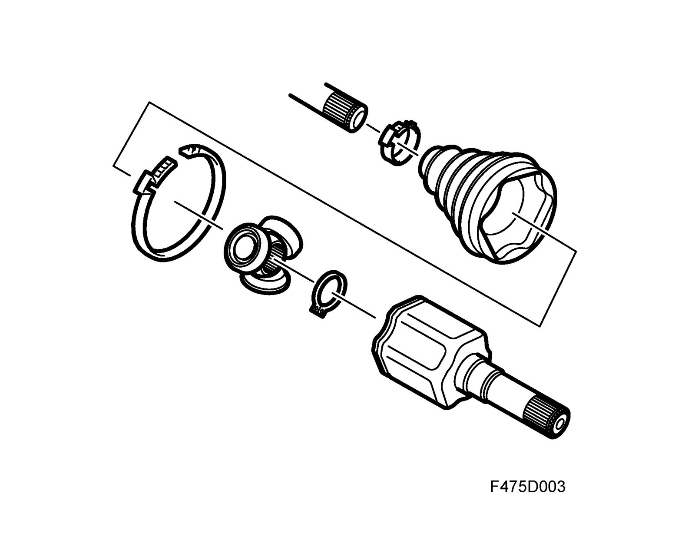
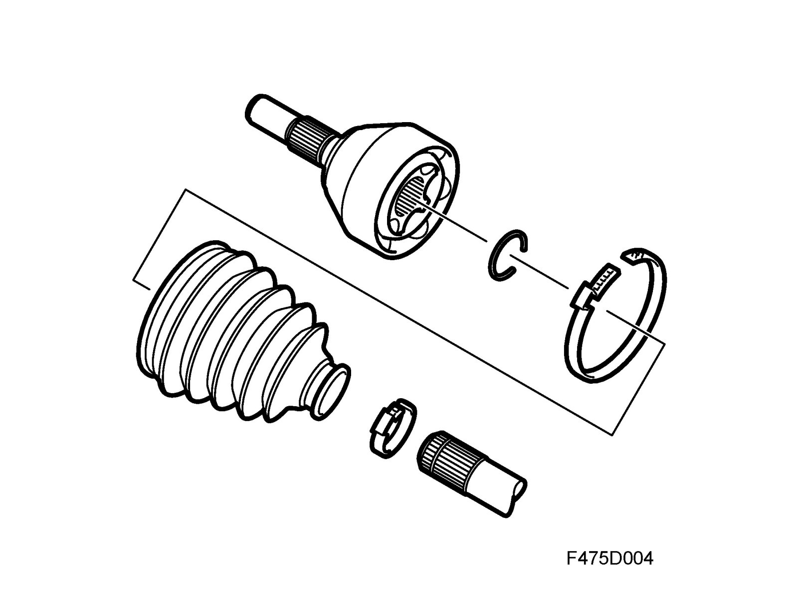

Drive Shaft Universal Joints
Drive shaft universal joints
The left-hand inboard drive shaft universal joint is connected to the differential with a quick-release coupling. The right-hand inboard drive shaft universal joint is connected to the intermediate shaft in the same way. The universal joints are packed with grease and protected from dirt and moisture with a rubber boot. On cars with automatic transmission, the inboard drive shaft universal joints are Tripod type and comprise a tripod housing and tripod.
The tripod has three needle bearing rollers and is axially adjustable in the tripod housing. On cars with manual gearbox, the inboard drive shaft universal joint is Rzeppa type. The outboard drive shaft universal joint conveys the engine torque from the drive shaft to the hub and the wheel. The outboard drive shaft universal joint has a stub axle connected to the hub with a spline joint. The universal joint is Rzeppa type (all models) and is designed as a bell-shape with spherical grooves in which six balls convey the driving force from the drive shaft to the hub.

The drive shaft is linked to the outboard drive shaft universal joint with splines and is secured axially with a circlip. The universal joint is permanently greased and protected by a boot. The joint is only lubricated when the boot is changed or when the joint is dismantled for some other reason.